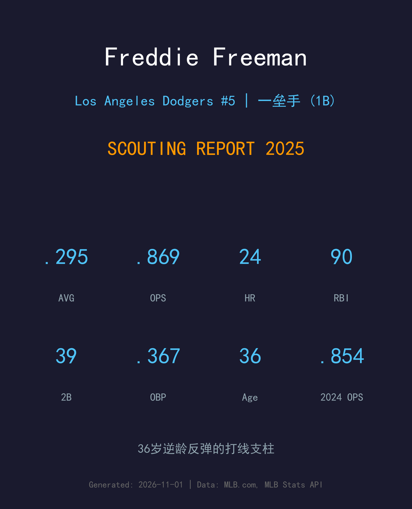
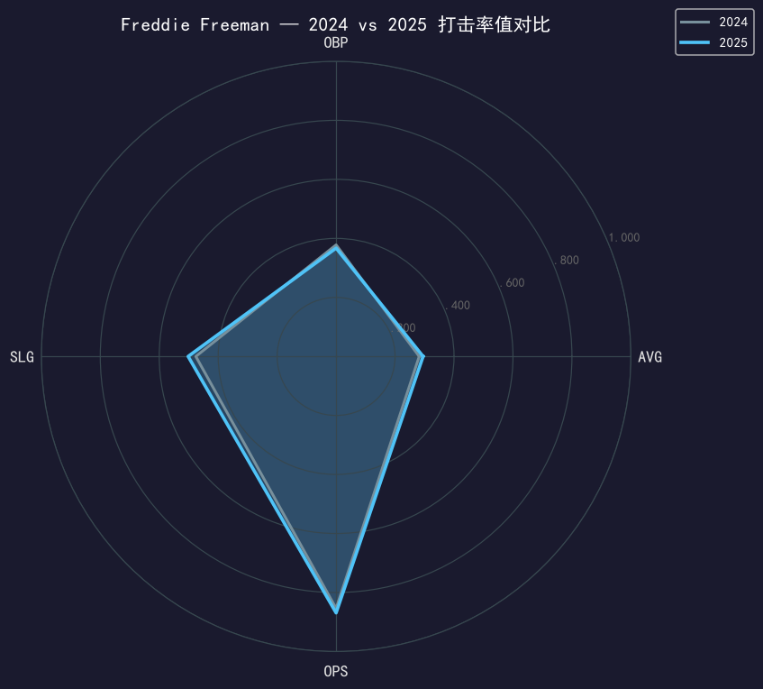
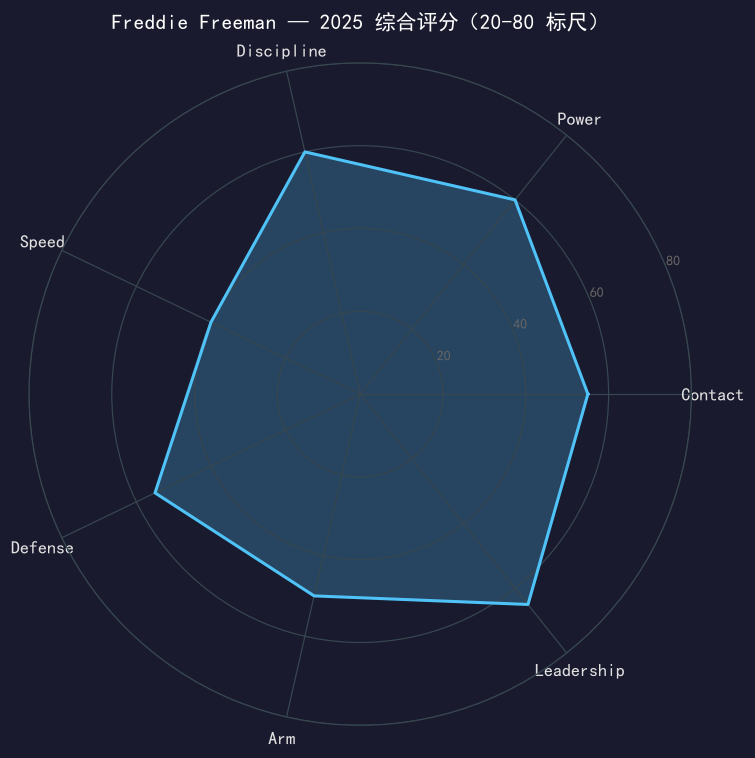

Los Angeles Dodgers #5 | 一垒手 | 左打 | 打线定海神针

Freddie Freeman 是2018年国联MVP、2020年世界大赛MVP，这个时代最稳定的一垒手与最可靠的打点机器之一。
2025年他出赛147场，缴出.295/.367/.502、OPS .869——在 36 岁的年纪不跌反涨（2024 年 .854）。39 支二垒打、24 轰、90 分打点全部维持 elite 水准，是道奇打线里最不可替代的那个人。代价是三振数飙升到 128 次（三振率 20.4%），保送从 78 次降到 60 次——他的进攻模式正从「选球机器」向「侵略强打」微妙转移。
守备端他依旧是国联最稳一垒手之一，接球与处理坏传球的功底是道奇内野防守的地板。合同还剩两季（至 2027），道奇生涯的谢幕篇章已经翻开。
.309/.388/.505、23轰，以稳定全能的表现拿下国联最高个人荣誉。
缩水赛季轰出 .341/.462/.640，季后赛带领道奇夺冠，个人荣膺 WS MVP。
道奇生涯最佳赛季之一，MVP 票选仅次于大谷翔平。
作为打线核心连续两年夺冠；2025 年季后赛出赛 17 场，随队七战击败蓝鸟完成卫冕。

| 赛季 | G | AVG | OBP | SLG | OPS | HR | RBI | 2B | BB | SO |
|---|---|---|---|---|---|---|---|---|---|---|
| 2024 | 147 | .282 | .378 | .476 | .854 | 22 | 89 | 35 | 78 | 100 |
| 2025 | 147 | .295 | .367 | .502 | .869 | 24 | 90 | 39 | 60 | 128 |
36 岁逆龄反弹的教科书：AVG +13 点、SLG +26 点、OPS +15 点。交易明细很清楚——用 28 次三振和 18 次保送的代价，换来更强的击球侵略性与长打产出。39 支二垒打是个人自 2021 年以来最多。
Freeman 的打法历来是「等球进垒、用整个球场」：2025 年他把击球仰角略为提高，长打率从 .476 涨到 .502，二垒打创近年新高。他的力量不靠拉打，而是扎实的反向推打与线条击球——这种打法对 aging 曲线更友好，因为它不依赖极端挥速。
128 次三振是三振率首次突破 20%，78→60 的保送收缩同样明显。这未必是坏事——侵略性提高可能正是他率值上升的原因——但如果 2026 年三振率继续爬升而击球初速开始下滑，衰退会以比预期更快的速度到来。球团需要密切监控他的 chase rate 变化。
一垒守备依旧是他的金字招牌：接球 radius 大、处理弹跳与坏传球的能力联盟顶级，与二垒手的配合默契是道奇内野防守体系的基石。他的守备价值很难用数据完全体现。
147 场满勤、.869 OPS、90 分打点——在「36 岁一垒手」这个衰退最快的群体里，Freeman 交出了反例。常规赛的他是道奇打线最稳的中心棒次；季后赛率值回落到 .221，但 5 支二垒打与 2 轰的关键长打仍在关键时刻出现。冠军游行上，他是被队友泼水最多的人——这就是他对这支球队的意义。

逆龄反弹的冠军一垒手，打线定海神针
A- 级 / 明星级一垒手
道奇 2025 季后赛之路：外卡轮 2-0 红人 → NLDS 3-1 费城人 → NLCS 4-0 酿酒人 → 世界大赛 4-3 多伦多蓝鸟（二连霸）。
| G | PA | AVG | OBP | SLG | OPS | HR | RBI | BB | SO |
|---|---|---|---|---|---|---|---|---|---|
| 17 | 80 | .221 | .321 | .382 | .703 | 2 | 3 | 10 | 16 |
Freddie Freeman 的合同到 2027 年到期，届时他将年满 38 岁。2025 年的逆龄反弹证明他还有油，但三振曲线的抬头提醒所有人：时间不会永远站在他这边。道奇需要开始为「后 Freeman 时代」的一垒做长期规划，同时为他的谢幕赛季准备好足够的荣誉舞台。
2026 目标：维持 OPS .820+，三振率压回 18% 以下
中期：守备场次管理，常规赛中多安排 DH 轮休
长期：2027 合同年或成道奇生涯谢幕，名人堂之路已然铺就
Freddie Freeman 出生于南加州橙县的维拉公园，是道奇本地球迷童年的梦想对象。2010 年他在亚特兰大勇士开启大联盟生涯，一守就是 12 年——2018 年国联 MVP、五次全明星，是勇士王朝前期的门面人物。
2021 年勇士夺冠后，Freeman 以自由球员身份回到家乡，与道奇签下六年合约。2020 年（缩水赛季随道奇夺冠并荣膺世界大赛 MVP）、2024、2025 三枚冠军戒指，加上 2021 年勇士的戒指，他手握四枚——而南加州男孩为家乡球队夺冠的故事，是近些年棒球界最温暖的叙事之一。
场下的 Freeman 以家庭至上闻名：妻子 Chelsea 与三个孩子常年出现在场边，2016 年他因妻子生产缺席比赛的往事，至今仍是球迷津津乐道的话题。他的职业生涯几乎没有负面新闻，是「职业球员」四个字最好的注解。